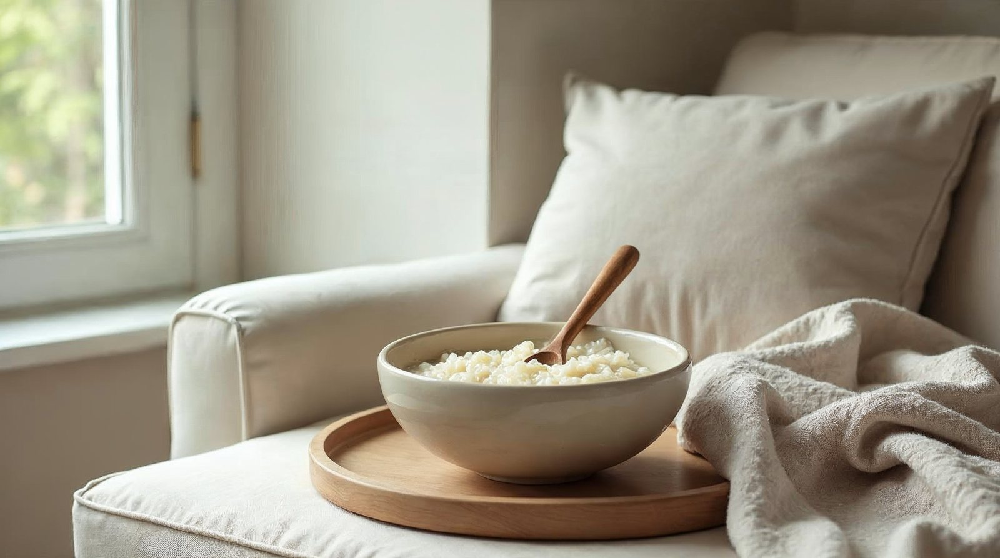
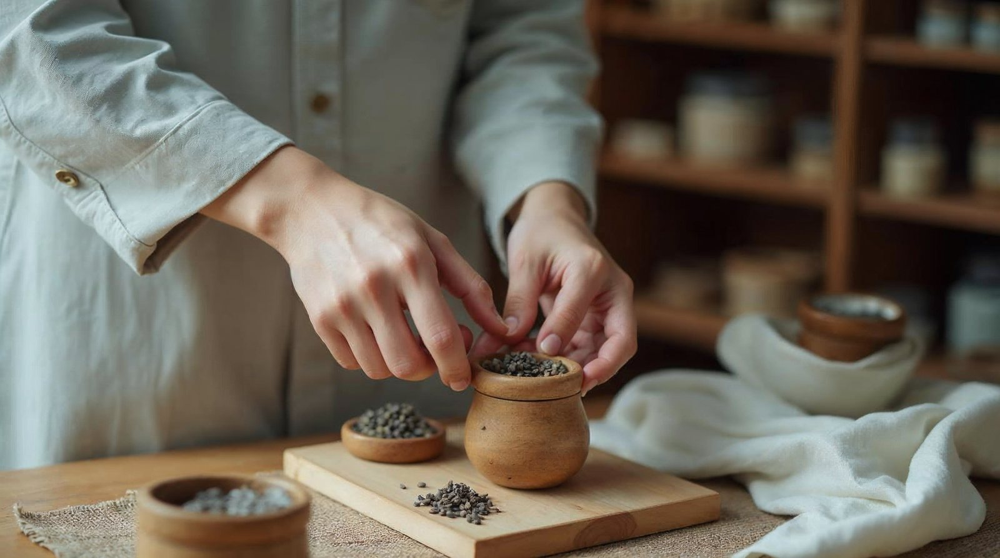
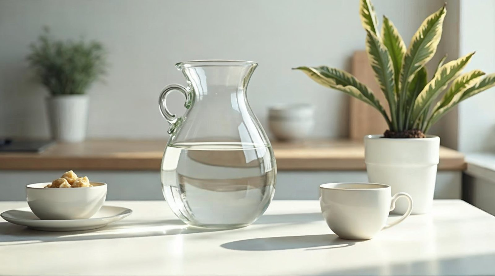
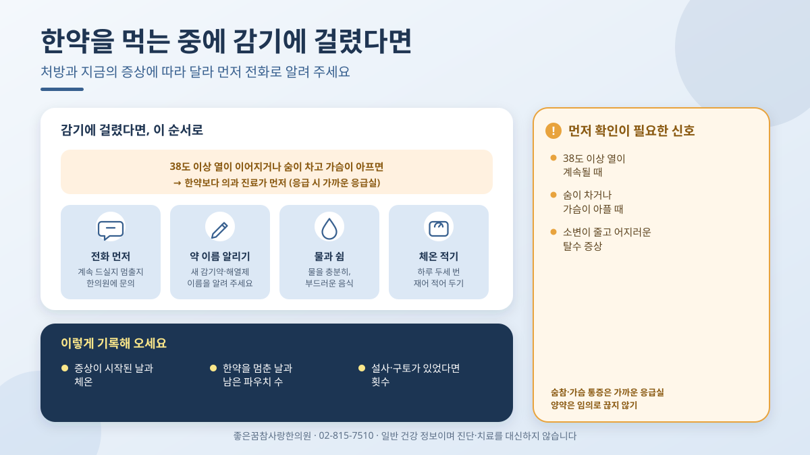

이종호 한의사 감수좋은꿈참사랑한의원 대표원장 (한의사 면허번호 19769)발행 2026-11-23 · 수정 2026-11-25
이 글의 차례
한약을 먹는 중에 감기에 걸렸다면 계속 드실지 잠시 멈출지 한의원에 먼저 전화로 문의해 주세요. 처방과 지금의 증상에 따라 달라지기 때문입니다.
감기약을 새로 드시게 되면 약 이름을 알려 주세요. 복용 간격을 함께 정해 드립니다. 멈췄던 한약을 다시 드실 때는 보관 기간을 처방받을 때 안내받은 대로 지키시고, 기억나지 않으면 드시기 전에 전화로 확인해 주세요.
왜 이런 불편이 생길 수 있나요
- 감기나 장염처럼 급한 증상이 생기면 몸 상태가 처방을 정할 때와 달라질 수 있습니다.
- 열이 나거나 속이 불편할 때는 평소 드시던 한약이 부담스럽게 느껴지는 분도 있습니다.
- 감기약이나 해열제를 새로 드시면 복용 간격을 다시 정해야 할 수 있습니다.
- 감기 뒤 기침이나 피로가 오래 남으면 그때의 몸 상태를 다시 살펴볼 필요가 있습니다.
- 장염처럼 설사나 구토가 있을 때는 몸의 수분이 부족해지기 쉬워, 무엇을 먹고 마실지부터 다시 정합니다.
먼저 이렇게 여쭙니다
- 어떤 증상이 언제부터 생겼나요?
- 열이 있나요?
- 목, 코, 기침, 몸살 가운데 무엇이 가장 불편하신가요?
- 감기약이나 다른 약을 새로 드시나요?
- 한약은 며칠분이 남았나요?
- 설사나 구토가 있나요?

일상에서 먼저 해 볼 수 있는 것
- 새 증상이 생기면 한의원에 전화로 먼저 알리기
- 감기약을 새로 먹게 되면 약 이름을 알려 주기(약 봉투를 사진으로 남겨 두면 편합니다)
- 물을 충분히 마시고 쉬기
- 열이 나면 체온을 하루 두세 번 재어 적어 두기
- 기름진 음식은 잠시 줄이고 죽처럼 부드러운 음식 먹기
- 열이 있는 동안은 무리한 운동이나 사우나를 피하고 일찍 잠자리에 들기
- 남은 한약은 안내받은 대로 보관하기
상황별 예시
- 예를 들어 한약을 드시던 직장인이 목이 칼칼하고 콧물이 조금 나는 정도라면, 하루 이틀 혼자 판단하기보다 전화로 증상과 체온을 알려 주세요. 처방과 지금 증상을 함께 보고 계속 드실지, 잠시 멈출지 안내해 드립니다.
- 예를 들어 혼자 사는 수험생이 열이 38도를 넘고 몸살이 심해 해열제나 감기약을 처방받았다면, 약 이름을 사진으로 찍어 두었다가 알려 주세요. 한약을 다시 드실 때 간격을 정하기 쉽습니다.
- 예를 들어 한약을 먹던 아이가 장염으로 설사와 구토를 해 소아청소년과 진료를 받았다면, 물을 조금씩 자주 먹이고 한약을 이어 갈지는 한의원에 전화로 여쭤 주세요.
자주 하는 오해
- 한약을 먹고 있으면 감기에 걸리지 않는다고 생각하는 분이 있지만, 한약을 드시는 중에도 감기에 걸릴 수 있고 그때는 지금의 증상을 먼저 살핍니다.
- 감기에 걸리면 한약은 끊어야 한다고 단정하기 쉽지만, 처방과 증상에 따라 계속 드시는 경우도, 잠시 멈추는 경우도 있어 먼저 여쭤 주시는 것이 좋습니다.
- 멈췄던 한약은 남은 만큼 한꺼번에 먹으면 된다고 여기기 쉽지만, 몰아서 드시지 말고 다시 시작하는 방법을 안내받으세요.
스스로 점검해 보세요
- 지금 체온을 재어 적어 두었다
- 새로 먹기 시작한 감기약·해열제 이름을 알고 있다
- 남은 한약 파우치 수와 받은 날을 알고 있다
- 물을 충분히 마시며 쉬고 있다
- 새 증상을 한의원에 전화로 알렸다
체크한 내용을 그대로 전화로 알려 주시면, 한약을 이어 갈지 잠시 멈출지 안내해 드리기가 한결 수월합니다.

한의원에서 함께 살필 수 있는 경우
- 한약 복용 중 감기 증상이 생긴 경우 복용 계속 여부와 간격을 함께 정합니다.
- 감기 뒤 기침이나 피로가 오래 남는 경우 몸의 상태를 함께 살핍니다.
- 배탈이 난 경우 소화 상태를 보고 복용 방법을 다시 정합니다.
좋은꿈참사랑한의원에서는 전화로 먼저 증상과 열, 새로 드시는 약을 여쭙고 한약을 계속 드실지, 잠시 멈추고 다시 드실지를 안내합니다. 직접 진찰이 필요하다고 판단되면 내원을 권하고, 다시 드실 때는 남은 한약의 보관 상태와 기간을 함께 확인해 드립니다.
감기가 지나간 뒤 다시 오시면, 처방받을 때 들었던 이야기에 이어 감기가 언제 시작해 어떻게 지나갔는지, 그사이 드신 약과 남은 증상을 먼저 여쭙습니다. 맥을 다시 짚고 필요하면 혀와 배를 살핀 뒤, 처방을 그대로 이어 갈지 조정할지, 남은 기침이나 피로를 먼저 살필지 함께 정합니다.
얼마나 지켜보고 언제 상담할까요
- 콧물이나 목 칼칼함처럼 가벼운 증상이라도 처음 생긴 날 전화로 한 번 알려 주세요. 그날 안내받은 대로 이어 가거나 잠시 멈춥니다.
- 감기가 지나간 뒤에도 기침이 3주 넘게 이어지거나 피로가 가시지 않으면, 그때의 몸 상태를 다시 살피는 상담을 받아 보세요.
- 멈췄던 한약을 다시 드시기 전에는 보관 상태와 남은 기간을 전화로 먼저 확인해 주세요.

이렇게 기록해 오시면 상담이 쉬워집니다
- 증상이 시작된 날과 체온
- 새로 먹은 감기약·해열제·소화제 이름
- 한약을 멈춘 날과 남은 파우치 수
- 설사·구토가 있었다면 횟수
이런 증상은 먼저 확인이 필요합니다
- 숨이 차거나 가슴이 아픈 경우, 38도 이상 열이 계속되는 경우
- 설사·구토 뒤 소변이 크게 줄거나 축 처지는 경우(특히 아이)
이런 신호가 있으면 한의원보다 가까운 병원이나 응급실을 먼저 찾으세요.
관련 글
- 감기는 나았는데 기침만 몇 주째 남아 있을 때는 어떻게 살피나요?
- 한약을 먹다가 속이 불편하거나 피부에 이상이 생기면 어떻게 알려야 하나요?
- 한약 파우치는 어떻게 보관하고, 여행 갈 때는 어떻게 챙기나요?

여쭙는 것
- 어떤 증상이 언제부터 생겼나요?
- 열이 있나요?
- 목, 코, 기침, 몸살 가운데 무엇이 가장 불편하신가요?
생활에서 해 볼 것
- 새 증상이 생기면 한의원에 전화로 먼저 알리기
- 감기약을 새로 먹게 되면 약 이름을 알려 주기(약 봉투를 사진으로 남겨 두면 편합니다)
- 물을 충분히 마시고 쉬기
한의원에서 함께 살필 것
- 한약 복용 중 감기 증상이 생긴 경우 복용 계속 여부와 간격을 함께 정합니다.
- 감기 뒤 기침이나 피로가 오래 남는 경우 몸의 상태를 함께 살핍니다.
- 배탈이 난 경우 소화 상태를 보고 복용 방법을 다시 정합니다.
먼저 확인이 필요한 신호
- 숨이 차거나 가슴이 아픈 경우, 38도 이상 열이 계속되는 경우
- 설사·구토 뒤 소변이 크게 줄거나 축 처지는 경우(특히 아이)
한눈에 보는 표
| 구분 | 핵심 |
|---|---|
| 여쭙는 것 | 어떤 증상이 언제부터 생겼나요? 열이 있나요? |
| 생활에서 해 볼 것 | 새 증상이 생기면 한의원에 전화로 먼저 알리기 감기약을 새로 먹게 되면 약 이름을 알려 주기(약 봉투를 사진으로 남겨 두면 편합니다) |
| 한의원에서 함께 살필 것 | 한약 복용 중 감기 증상이 생긴 경우 복용 계속 여부와 간격을 함께 정합니다. 감기 뒤 기침이나 피로가 오래 남는 경우 몸의 상태를 함께 살핍니다. |
| 먼저 확인이 필요한 신호 | 숨이 차거나 가슴이 아픈 경우, 38도 이상 열이 계속되는 경우 설사·구토 뒤 소변이 크게 줄거나 축 처지는 경우(특히 아이) |
자주 묻는 질문
감기약과 한약을 같이 먹어도 되나요?
새로 드시는 약을 알려 주시면 복용 간격을 함께 정합니다.
감기 기운이 살짝 있는 정도면요?
가벼운 증상이라도 한 번 전화로 알려 주시면 처방에 맞춰 안내해 드립니다.
감기 때문에 멈춘 한약은 언제 다시 먹나요?
열이 내리고 증상이 가라앉은 뒤 전화로 알려 주시면, 남은 한약의 보관 상태와 기간을 확인하고 다시 드실 때를 안내해 드립니다.
독감 진단을 받았는데요?
의과에서 처방받은 약을 안내받은 대로 드시고, 한약을 이어 갈지는 한의원에 전화로 먼저 여쭤 주세요.
좋은꿈참사랑한의원은 재진 때 지난번 이야기부터 이어서 여쭙니다. 진료시간과 예약은 오시는 길에서 확인하세요.
어디서 상담받을 수 있나요?
좋은꿈참사랑한의원은 서울 동작구 만양로2길 2 신성빌딩 3층·5층(서울 동작구 상도동, 7호선 상도역 3번 출구 근처)에 있습니다. 한의사 3명(이종호 대표원장, 조영기 수석진료원장, 정원영 진료원장)이 진료합니다. 진료시간은 평일 09:30~20:00(점심 13:00~14:00), 토·일·공휴일 09:30~15:00이며, 방문 전 전화로 확인을 권합니다. 예약은 네이버 예약, 카카오톡 상담, 전화 02-815-7510로 받습니다.
이 글은 일반적인 건강 정보이며 개인의 진단이나 치료를 대신하지 않습니다. 증상이 있거나 복용 중인 약이 있다면 진료를 통해 확인하세요. 치료 효과는 개인마다 다를 수 있습니다.
작성 기준: 일반적으로 알려져 있는 건강 정보를 참고해 정리했습니다(대표원장 감수). 증상 기록은 1~2주 동안 하루 1회, 비슷한 시간에 적어 오시면 지난 상태와 비교하기 쉽습니다.